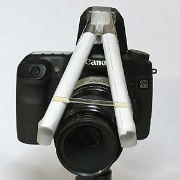
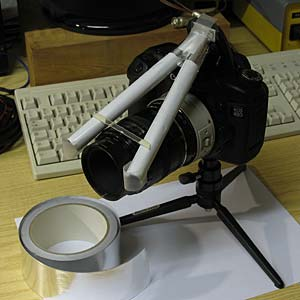
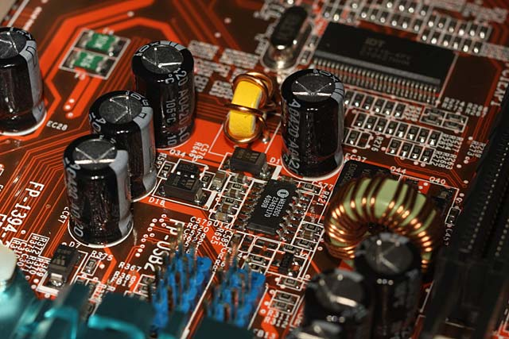
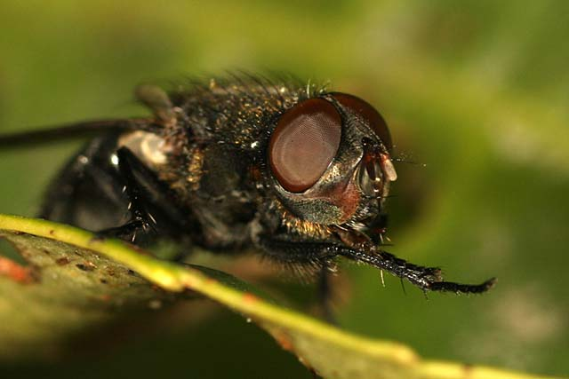
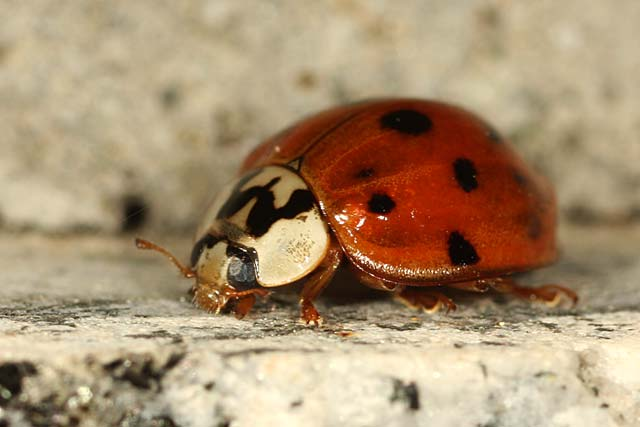
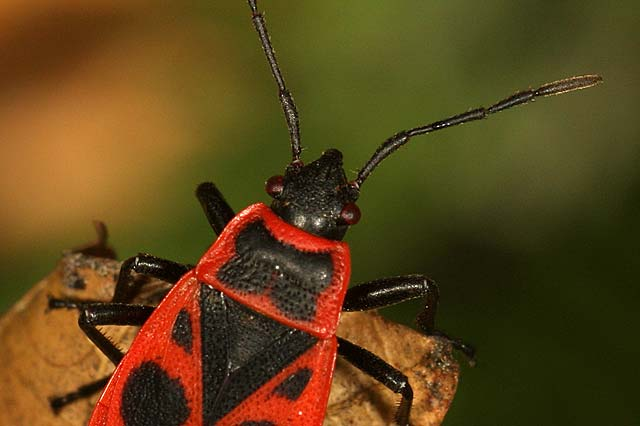
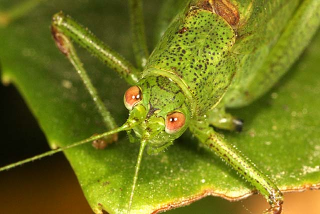

Photo & projects
MACRO FLASH (light guide) made simple
How to make a simple macro flash "DIY" by R.Chirio
Page index


October 2007
Why carry along an external flash unit when a little is enough to take excellent macro photos?
In fact, two aluminum foil tubes are enough to create light guides, sufficient to direct the light from the built-in flash directly in front of the macro lens.
This solution is suitable for any film or digital reflex SRL camera with integrated TTL flash.
The construction is very simple, just aluminum tape, or aluminum foil from the kitchen.
It's possible to use pretty much all types of specific macro optics, from 50 mm to 185 mm, important to extend the light guide tubes a bit beyond the length of the optics fully extended.
Why bring back a group external flash when it does not take much to make good macro photos?
In fact just two tubes of tinfoil to create guidelines light, sufficient to bring the light of flash integrated directly in front of the macro.
This solution is suitable for any SRL film or digital SLR with integrated flash.
The construction is very simple, adhesive tape aluminium or aluminium kitchen.
And 'can use some all types of optical specific macros from 50mm to 185mm, an important stretch tubes for driving some light over the entire length of optics extended.
Realization - construction
- Mount the macro optics on your camera and with flash open measure the distance between the flash and the front of the lens, add 1 cm and cut two pieces of aluminum tape the same length.
- Wrap the tape around a 12-14mm tube keeping the metal part inward, secure the made tube with adhesive tape.
- Join with aluminum tape the two tubes obtained, and shape them somewhat into a rectangle so as to cover the surface of the pop-up flash outlet.
- IMPORTANT On the tube termination, subject side, you must make the light diffuser, I used opaque adhesive tape, a 2 cm strip from white plastic from shopping bags also works.
- A plastic rod will keep the tubes open above the lens, a plastic spoon from automatic coffee dispensers works fine.
- We fix the group of optical guides on the camera, some aluminum tape for the flash head and double-sided tape to rest the whole thing on the lens.
- Assemble the macro perspective on your camera with flash and opened measure the distance between the flash and the front part of the objective, add 1 cm and cut two pieces of tape allumnio of the same length.
- Wrap the tape over to a tube from 12-14mm holding the metal part inwards set with adhesive tape the tube realized.
- Join with tape the two aluminum tubes obtained, and shape them somewhat into a rectangle to cover the surface of the pop-up flash outlet.
- IMPORTANT The termination of pipes, side subject, we must realize the speaker of light, I used adhesive tape opaque, it should be a good strip by 2 cm derived from the white plastic bags spending.
- A plastic wand we will open pipes on the goal, it should be a good teaspoon of plastic coffee vending machines.
- Secure the optical camera guide group with some aluminum tape for the head and double-sided flash tape to support everything.
TEST SHOTS with Canon Eos 40D with Flash with light guides
All the macro images that follow were taken with a Canon EF 50 Macro lens, 12 mm extension tube and Canon Extender II 1.4X converter. With a focal length of 70 mm and maximum macro ratio of 3:1.
Magnification variations are obtained by manually adjusting focus throughout the full travel.
2007 SHOTS





for info contact: info@chirio.com
© Roberto Chirio: all rights reserved.